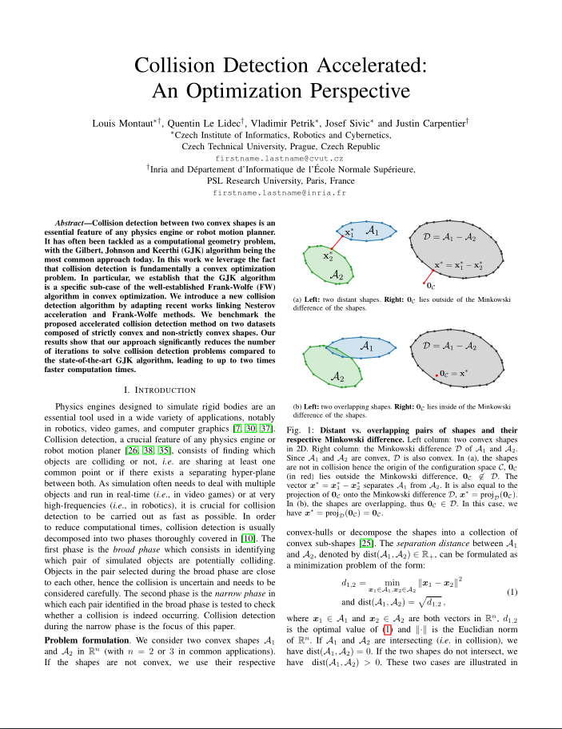

Collision detection between two convex shapes is an essential feature of any physics engine or robot motion planner. It has often been tackled as a computational geometry problem, with the Gilbert, Johnson and Keerthi (GJK) algorithm being the most common approach today. In this work we leverage the fact that collision detection is fundamentally a convex optimization problem. In particular, we establish that the GJK algorithm is a specific sub-case of the well-established Frank-Wolfe (FW) algorithm in convex optimization. We introduce a new collision detection algorithm by adapting recent works linking Nesterov acceleration and Frank-Wolfe methods. We benchmark the proposed accelerated collision detection method on two datasets composed of strictly convex and non-strictly convex shapes. Our results show that our approach significantly reduces the number of iterations to solve collision detection problems compared to the state-of-the-art GJK algorithm, leading to up to two times faster computation times.
|  |
L. Montaut, Q. Le Lidec, V. Petrik, J. Sivic and J. Carpentier Collision Detection Accelerated: An Optimization Perspective Robotics: Science and Systems, 2022 [Paper on arXiv] BibTeX
@inproceedings{montaut2022GJKNesterov,
title = {Collision Detection Accelerated: An Optimization Perspective},
author = {Montaut, Louis and Le Lidec, Quentin and Petrik, Vladimir and Sivic, Josef and Carpentier, Justin},
booktitle = {Robotics: Science and Systems},
year = {2022}
}
|
This work was partly supported by the European Regional Development Fund under the project IMPACT (reg. no. CZ.02.1.01/0.0/0.0/15 003/0000468), by the French government under management of Agence Nationale de la Recherche as part of the “Investissements d’avenir” program, reference ANR-19-P3IA-0001 (PRAIRIE 3IA Institute) and the Louis Vuitton ENS Chair on Artificial Intelligence.
The documents contained in these directories are included by the contributing authors as a means to ensure timely dissemination of scholarly and technical work on a non-commercial basis. Copyright and all rights therein are maintained by the authors or by other copyright holders, notwithstanding that they have offered their works here electronically. It is understood that all persons copying this information will adhere to the terms and constraints invoked by each author's copyright .